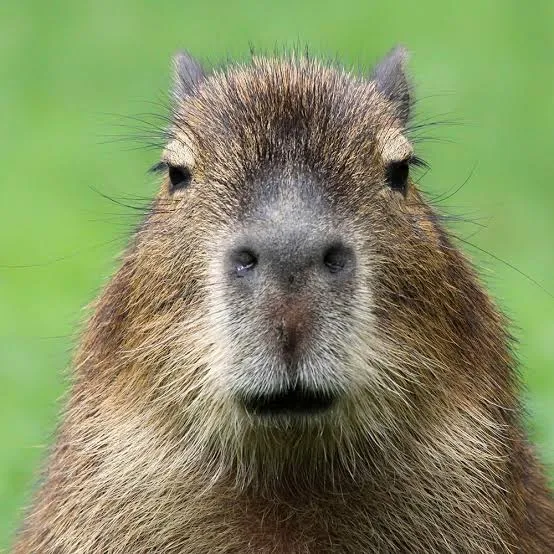

El capibara (Hydrochoerus hydrochaeris) es el roedor viviente más grande y pesado del mundo. Este mamífero semiacuático es nativo de las regiones tropicales y subtropicales de Sudamérica, donde habita en humedales, manglares, ríos y lagunas. Dependiendo de la región geográfica, también se le conoce de manera común como carpincho, chigüiro, chigüire o ronsoco. El significado de su nombre proviene del guaraní y se traduce como "Señor de las Hierbas", haciendo honor a su dieta estrictamente herbívora